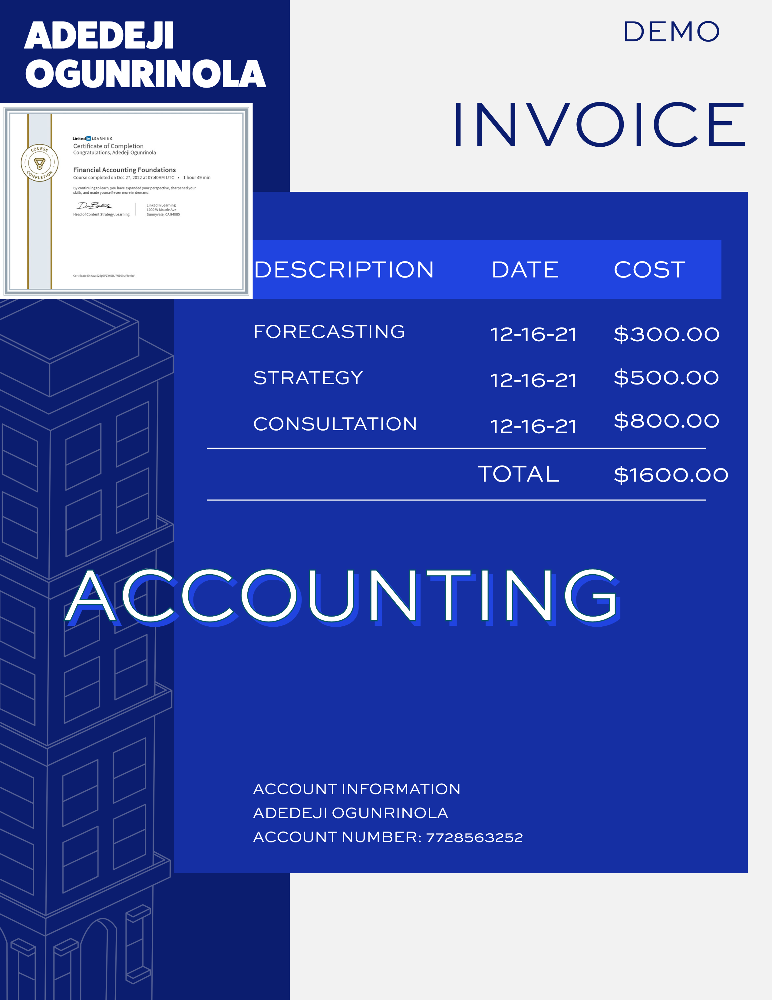

Financial modeling is one of the core areas of financial analysis. This area gives you a glimpse into an organization's future based on historical records/ numbers. This knowledge is extensively useful in Financial Planning and Analysis (FP&A) and generally very useful in corporate finance. Please click the tab below to view my certification in this area. To evaluate how I have employed this skills recently and in the past, kindly click on the LinkedIn tab.

Analyzing financial statements is one of the key job descriptions for financial analysts. Investment analysis also plays a core skill for financial analysts. A prominent tool for these analyses is Microsoft Excel, among others. Please click the tab below to view my certification in this area. To evaluate how I have employed this skills recently and in the past, kindly click on the LinkedIn tab.

Data analytics is a significant skill for financial analysts. It helps to manipulate and understand numbers or figures for informed decision-making. The tools I employ regularly include Microsoft Excel, Stata, R, Tableau, Power BI, and so on. Please click the tab below to view my certification in this area. To evaluate how I have employed this skills recently and in the past, kindly click on the LinkedIn tab.

An understanding of investments and accounting is vital for financial analysts. Taking stock of goods and accounting for returns is critical in efficiently delivering tasks as a financial analyst. Please click the tab below to view my certification in this area. To evaluate how I have employed this skills recently and in the past, kindly click on the LinkedIn tab.

These skills are a must-have for all financial analysts. They help to sharpen the overall impact of the financial analyst. Please click the tab below to view my certification in this area. To evaluate how I have employed this skills recently and in the past, kindly click on the LinkedIn tab.